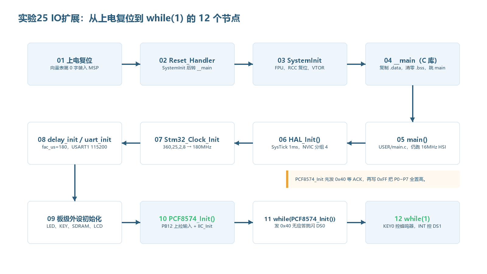
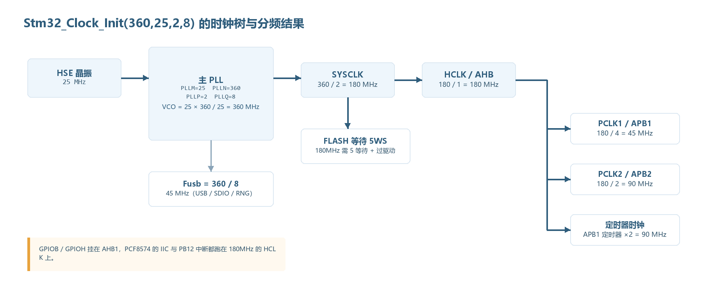
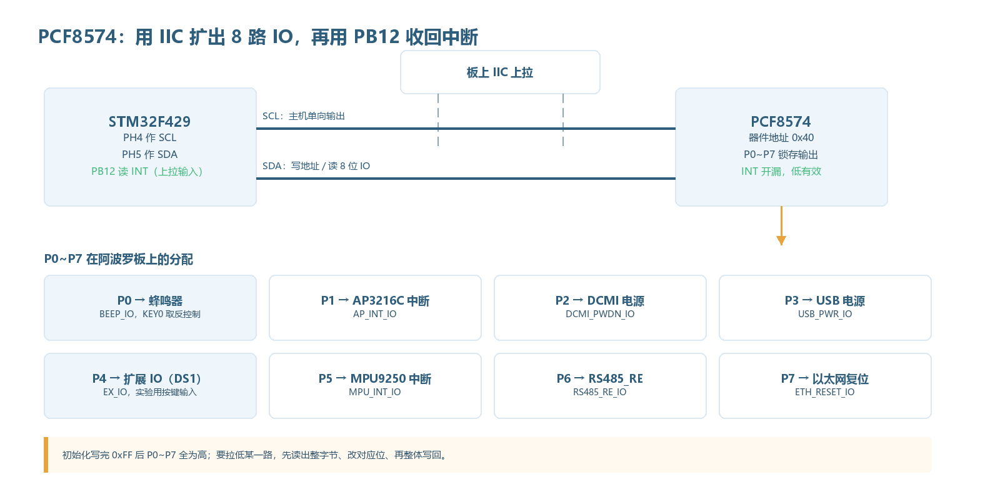
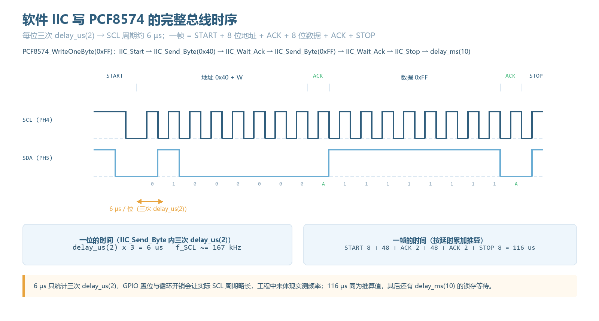
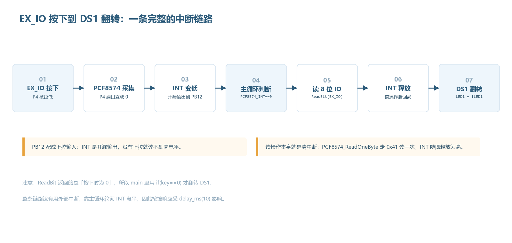

01 实验目标与硬件资源
实验25 仍然复用实验24 的软件 IIC，只把从机从 AT24C02 换成 PCF8574。这颗芯片的价值在于用两根线换 8 路 IO：P0～P7 在阿波罗板上各接一路外设，而 INT 引脚接回 STM32 的 PB12，端口电平一变就拉低通知主机。
| 功能 | 引脚 / 器件 | 工程中的初始化 |
|---|---|---|
| IIC 时钟线 | PH4，推挽输出 + 上拉 | IIC_Init() |
| IIC 数据线 | PH5，推挽输出 + 上拉 | IIC_Init() |
| IO 扩展芯片 | PCF8574，地址 0x40 | PCF8574_Init() |
| 中断输入 | PB12，输入上拉 | PCF8574_Init() |
| 蜂鸣器 | PCF8574 的 P0（BEEP_IO） | PCF8574_WriteBit() |
| 扩展 IO | PCF8574 的 P4（EX_IO） | PCF8574_ReadBit() |
| LED0 / LED1 | PB1 / PB0，推挽输出 | LED_Init() |
| 显示 | LCD（LTDC + 外部 SDRAM） | SDRAM_Init() + LCD_Init() |
PCF8574_ADDR 定义为 0x40，是已经左移一位的 8 位写地址；读地址靠 |0x01 得到 0x41。写寄存器时不要再手动左移，否则会发出 0x80。02 目录与文件分工
| 文件 | 职责 | 本实验关注点 |
|---|---|---|
USER/main.c | 初始化顺序与主循环 | KEY0 控蜂鸣器，INT 控 DS1 |
USER/stm32f4xx_it.c | 异常与中断入口 | SysTick_Handler()、HardFault_Handler() |
USER/system_stm32f4xx.c | 复位后的最小配置 | FPU、RCC 复位、VTOR 重定位 |
CORE/startup_stm32f429xx.s | 向量表、栈堆、复位入口 | Stack 0x400、Heap 0x200、Reset_Handler |
SYSTEM/sys/sys.c | 时钟初始化 | Stm32_Clock_Init() 的 PLL 与 Flash 等待 |
SYSTEM/delay/delay.c | 微秒/毫秒延时 | IIC 位时序与 delay_ms(10) 写周期 |
SYSTEM/usart/usart.c | 串口与 printf | fputc() 重定向、PA9/PA10 配置 |
HARDWARE/IIC/myiic.c | 软件模拟 IIC 时序 | 与实验24 完全一致，直接复用 |
HARDWARE/PCF8574/pcf8574.c | 本实验核心 | 在位检测、整字节读写、位操作 |
HARDWARE/led|key|sdram|lcd | 板级外设 | 现象呈现：灯、按键、屏幕 |
与实验24 相比，myiic.c 一行没改，只新增了 pcf8574.c。这就是分层的好处：总线协议稳定之后，换从机只需要再写一层“器件协议”。
03 启动流程总览

初始化顺序依旧是“芯片 → 板子 → 外部器件”：时钟与时基先立住，LED / 按键 / SDRAM / LCD 再亮起来，最后才去 while(PCF8574_Init()) 里反复检测扩展芯片。检测失败不会卡死，而是闪 DS0 并不断重试，方便现场判断是排线没插还是芯片坏了。
PCF8574_Init()出现在while()的条件里，返回 0 才跳出，返回 1 就继续循环重试。- 它内部先配 PB12 为上拉输入，再调
IIC_Init()，最后发一次 0x40 看有没有应答。 - 无论检测是否成功，都会执行
PCF8574_WriteOneByte(0xFF)，把 P0～P7 默认置高。 - 只有检测通过后才打印
PCF8574 Ready!并进入主循环，此时 POINT_COLOR 被切成蓝色。
04 启动文件与向量表
Stack_Size EQU 0x400; // 栈 1KB，主栈 MSP 从这里向下生长 Heap_Size EQU 0x200; // 堆 512B，本工程几乎不用 malloc __Vectors DCD __initial_sp ; Top of Stack DCD Reset_Handler ; Reset Handler DCD NMI_Handler ; NMI Handler DCD HardFault_Handler ; Hard Fault Handler ... Reset_Handler PROC EXPORT Reset_Handler [WEAK] IMPORT SystemInit IMPORT __main LDR R0, =SystemInit BLX R0 // 先跑 SystemInit LDR R0, =__main BX R0 // 再进 C 库，最终调用 main ENDP
- 复位时内核从地址 0 取两个字：第 0 个字装入 MSP，第 1 个字装入 PC。
- F429 的 Flash 起始地址是 0x08000000，上电时 0x00000000 别名到 Flash，读到就是本工程的向量表。
- 本实验的局部变量只有
key、i、beepsta三个小变量，1KB 栈很宽裕；但LCD_ShowString调用层次较深，仍不建议在栈上放大数组。 Reset_Handler里的BLX会保留返回地址，所以SystemInit结束后还会回到启动代码继续执行。
05 SystemInit 与 HAL_Init
void SystemInit(void)
{
#if (__FPU_PRESENT == 1) && (__FPU_USED == 1)
SCB->CPACR |= ((3UL << 10*2)|(3UL << 11*2)); /* set CP10 and CP11 Full Access */
#endif
RCC->CR |= (uint32_t)0x00000001; // 先开内部 HSI，保证有饭吃
RCC->CFGR = 0x00000000; // 清空分频配置
RCC->CR &= (uint32_t)0xFEF6FFFF; // 关 HSEON / CSSON / PLLON
RCC->PLLCFGR = 0x24003010; // PLL 参数恢复复位值
SCB->VTOR = FLASH_BASE | VECT_TAB_OFFSET; // 向量表定位到 Flash 起始
}
SystemInit() 只做“复位到安全状态”，真正把主频拉到 180MHz 的是 main() 里的 Stm32_Clock_Init()。HAL_Init() 则负责两件事：把 SysTick 配成 1ms 中断，并把 NVIC 优先级分组设为 4 位抢占、0 位子优先级。
HAL_StatusTypeDef HAL_Init(void)
{
HAL_NVIC_SetPriorityGrouping(NVIC_PRIORITYGROUP_4); // 4 位抢占 + 0 位子优先级
HAL_InitTick(TICK_INT_PRIORITY); // SysTick 1ms
...
}
PCF8574_INT==0 是靠主循环反复读 IDR 得到的，不是中断触发，所以响应延迟取决于 delay_ms(10) 的节拍。06 时钟、延时与串口

// SYSTEM/sys/sys.c RCC_OscInitStructure.PLL.PLLM = pllm; // 25，HSE 先分频 RCC_OscInitStructure.PLL.PLLN = plln; // 360，VCO = 25 / 25 × 360 = 360MHz RCC_OscInitStructure.PLL.PLLP = pllp; // 2，SYSCLK = 360 / 2 = 180MHz RCC_OscInitStructure.PLL.PLLQ = pllq; // 8，Fusb = 360 / 8 = 45MHz RCC_ClkInitStructure.AHBCLKDivider = RCC_SYSCLK_DIV1; // HCLK = 180MHz RCC_ClkInitStructure.APB1CLKDivider = RCC_HCLK_DIV4; // PCLK1 = 45MHz RCC_ClkInitStructure.APB2CLKDivider = RCC_HCLK_DIV2; // PCLK2 = 90MHz HAL_RCC_ClockConfig(&RCC_ClkInitStructure, FLASH_LATENCY_5);
// SYSTEM/delay/delay.c
void delay_init(u8 SYSCLK)
{
HAL_SYSTICK_CLKSourceConfig(SYSTICK_CLKSOURCE_HCLK); // SysTick 跟随 HCLK
fac_us = SYSCLK; // 180MHz → 每微秒 180 个节拍
}
void delay_us(u32 nus)
{
u32 ticks = nus * fac_us; // 需要等的节拍数
u32 told = SysTick->VAL; // SysTick 是递减计数器
while (1) { ... if (tcnt >= ticks) break; } // 差值累加到 ticks 就退出
}
void delay_ms(u16 nms)
{
u32 i;
for (i = 0; i < nms; i++) delay_us(1000); // 毫秒靠微秒循环拼
}
fac_us必须与 HCLK 一致，否则 IIC 的delay_us(4)与delay_us(2)都会失真，PCF8574 可能时通时不通。delay_us()是轮询实现，不依赖中断，所以在while(PCF8574_Init())的失败分支里也能正常闪灯。- GPIOB 与 GPIOH 都挂在 AHB1，读写端口寄存器不需要额外的总线分频换算。
- 串口配置为 8N1、无硬件流控，仅用于 printf 输出；DMA 未参与本实验。
07 PCF8574 与地址编码
PCF8574 是 IIC 转 8 位并行口的芯片，7 位地址为 0100 A2 A1 A0，阿波罗板上地址脚接地，所以 8 位写地址就是 0x40、读地址 0x41。它的端口是准双向结构：输出高电平时内部弱上拉，输出低电平时强下拉，因此把某一位当输入用时，必须先把它写成 1。
// HARDWARE/PCF8574/pcf8574.h #define PCF8574_ADDR 0X40 // 已左移一位的写地址 #define PCF8574_INT PBin(12) // INT 接 PB12 #define BEEP_IO 0 // P0 蜂鸣器 #define AP_INT_IO 1 // P1 AP3216C 中断 #define DCMI_PWDN_IO 2 // P2 DCMI 电源 #define USB_PWR_IO 3 // P3 USB 电源 #define EX_IO 4 // P4 扩展 IO（本实验按键） #define MPU_INT_IO 5 // P5 MPU9250 中断 #define RS485_RE_IO 6 // P6 RS485_RE #define ETH_RESET_IO 7 // P7 以太网复位
0x40是写地址，读地址要在最低位置 1，也就是0x41。- 宏名统一以
_IO结尾，业务层只写BEEP_IO、EX_IO，不需要记住具体位号。 - PB12 读 INT 用
PBin(12)，本质是读 GPIOB 的 IDR 第 12 位。 - 上电默认
0xFF全部写 1，这样 P4 这类被外部按键拉低的引脚才有机会读到 0。
08 IIC 扩展 8 路 IO

// HARDWARE/PCF8574/pcf8574.c
u8 PCF8574_ReadOneByte(void)
{
u8 temp = 0;
IIC_Start();
IIC_Send_Byte(PCF8574_ADDR|0X01); // 0x41，进入接收模式
IIC_Wait_Ack();
temp = IIC_Read_Byte(0); // 读 8 位，回 NACK
IIC_Stop();
return temp;
}
void PCF8574_WriteOneByte(u8 DataToWrite)
{
IIC_Start();
IIC_Send_Byte(PCF8574_ADDR|0X00); // 0x40，写 8 位端口
IIC_Wait_Ack();
IIC_Send_Byte(DataToWrite); // 一次写满 8 路
IIC_Wait_Ack();
IIC_Stop();
delay_ms(10); // 给芯片留出锁存时间
}
把 PCF8574_WriteOneByte() 摊到总线上看，一帧只有三段：地址字节 0x40 加写位、一个数据字节、两次 ACK，两头各一个 START 与 STOP。

每一位的时间来自 IIC_Send_Byte() 里的三次 delay_us(2)，合计约 6 µs，整帧约 116 µs（推算值）；写完之后源码又补了 delay_ms(10)，所以实际一次写操作远不止 116 µs。
- PCF8574 没有“寄存器地址”的概念，写一个字节就是写整个端口，所以协议比 EEPROM 简单得多。
- 读的时候必须发
0x41，否则芯片仍处于写方向，SDA 上不会有数据。 IIC_Read_Byte(0)传 0 表示只读一个字节并回 NACK，正好匹配 PCF8574 的读长度。- 写周期只需几十微秒，源码仍保留
delay_ms(10)，属于保守写法，也方便示波器观察。
09 初始化与在位检测
u8 PCF8574_Init(void)
{
u8 temp = 0;
__HAL_RCC_GPIOB_CLK_ENABLE(); // 先开 GPIOB 时钟
GPIO_Initure.Pin = GPIO_PIN_12; // PB12 作 INT 输入
GPIO_Initure.Mode = GPIO_MODE_INPUT;
GPIO_Initure.Pull = GPIO_PULLUP; // INT 是开漏，必须上拉
GPIO_Initure.Speed = GPIO_SPEED_HIGH;
HAL_GPIO_Init(GPIOB, &GPIO_Initure);
IIC_Init(); // PH4 / PH5 就绪
IIC_Start();
IIC_Send_Byte(PCF8574_ADDR); // 只发地址，不发数据
temp = IIC_Wait_Ack(); // 0 = 有应答 = 芯片在位
IIC_Stop();
PCF8574_WriteOneByte(0XFF); // 默认 8 路全高
return temp; // main 用 while 判返回值
}
- 返回值直接来自
IIC_Wait_Ack()：0 表示从机拉低了 SDA，1 表示 250 次计数内一直为高，判定为无应答。 - 检测只发地址不发数据，是最轻量的“在不在”探测方式，不会改动端口状态。
- 最后统一写
0xFF，保证 P0～P7 全部为高；对 P4 这种外部按键接地的引脚，写 1 才能读回真实电平。 main()把它放进while()条件，返回 1 就继续重试，所以即使热插拔也能自愈。
10 中断链路：INT 到 DS1

void PCF8574_WriteBit(u8 bit, u8 sta)
{
u8 data;
data = PCF8574_ReadOneByte(); // 先读回当前 8 位
if (sta == 0) data &= ~(1 << bit); // 清这一位
else data |= 1 << bit; // 置这一位
PCF8574_WriteOneByte(data); // 再整体写回
}
u8 PCF8574_ReadBit(u8 bit)
{
u8 data = PCF8574_ReadOneByte(); // 读操作同时清中断
if (data & (1 << bit)) return 1;
else return 0;
}
- PCF8574 不能按位写，只能整字节覆盖，所以
WriteBit()必须“读—改—写”，否则会把其他 7 路一起冲掉。 - INT 是开漏输出，任何一个输入脚的电平与上次写入值不同都会把它拉低；对 PCF8574 执行一次读操作后自动释放。
ReadBit()返回的是引脚真实电平：EX_IO 外接按键接地，按下时为 0，所以主循环用if(key==0)才翻转 LED1。- 链路里没有用到外部中断，靠
while(1)每圈判断PCF8574_INT==0，响应延迟约 10ms。
11 主循环与按键逻辑
// USER/main.c u8 beepsta = 1; // 初始状态：蜂鸣器位为 1 while (PCF8574_Init()) // 检测不到就闪 DS0 重试 { LCD_ShowString(30,170,200,16,16,"PCF8574 Check Failed!"); delay_ms(500); LCD_ShowString(30,170,200,16,16,"Please Check! "); delay_ms(500); LED0 = !LED0; } LCD_ShowString(30,170,200,16,16,"PCF8574 Ready!"); while (1) { key = KEY_Scan(0); if (key == KEY0_PRES) // KEY0：切蜂鸣器 { beepsta = !beepsta; PCF8574_WriteBit(BEEP_IO, beepsta); } if (PCF8574_INT == 0) // 有输入变化 { key = PCF8574_ReadBit(EX_IO); // 读 P4，同时清中断 if (key == 0) LED1 = !LED1; // 按下才翻转 DS1 } i++; delay_ms(10); if (i == 20) { LED0 = !LED0; i = 0; } }
beepsta初值为 1，第一次按 KEY0 变成 0，也就是把 P0 拉低；具体响不响取决于板上蜂鸣器的驱动极性。PCF8574_INT == 0是电平判断，不是边沿判断，所以按住不放会反复读到 0，但LED1只在每次按键松开前翻转一次（因为读操作会刷新）。KEY_Scan(0)与ReadBit共用变量key，顺序上先判 KEY0 再判 INT，互不干扰。- 主循环每圈
delay_ms(10)，累计 20 圈翻转 DS0，约 200ms 一次，用来证明系统没卡死。
12 交互演示：按键与中断
PCF8574_WriteBit(BEEP_IO, beepsta)，EX_IO 按下走 PCF8574_INT==0 判断，读 EX_IO 后 INT 自动回高。以上仅演示逻辑。13 操作与现象对照
| 操作 | 代码路径 | 现象 |
|---|---|---|
| 上电 / 复位 | PCF8574_Init() | 屏幕显示 PCF8574 TEST，检测通过后出现 PCF8574 Ready! |
| 扩展板未接 | while(PCF8574_Init()) | DS0 约 1 秒闪一次，屏幕交替显示 Check Failed 与 Please Check |
| 按 KEY0 | PCF8574_WriteBit(BEEP_IO, ...) | 板上蜂鸣器状态切换，LCD 无变化 |
| 按下 EX_IO | PCF8574_INT==0 → ReadBit(EX_IO) | DS1 状态翻转，INT 随即回高 |
| 松开 EX_IO | INT 保持高 | 主循环不再进入 INT 分支，DS1 保持 |
| 空闲 | 主循环 i++ | DS0 约每 200ms 翻转一次 |
14 常见问题排查
| 现象 | 可能原因 | 排查方法 |
|---|---|---|
| 一直显示 PCF8574 Check Failed | 地址写成 0x20 或 0x80（多左移一位） | 确认宏值是 0x40，逻辑分析仪看首字节 |
| INT 一直为高，按键没反应 | PB12 没上拉，或外部中断脚焊错 | 用万用表量 PB12 静态电平，应为 3.3V |
| 按一次键 DS1 连翻多次 | INT 未在读操作后释放，抖动被反复采样 | 确认 ReadBit 真的执行了 0x41 读 |
| 蜂鸣器一响其他 IO 也变了 | 直接写单字节而没有先读回 | 坚持用 WriteBit 而不是手写 WriteOneByte |
| P4 永远读 0 | 初始化没写 0xFF，端口停在低电平 | 检查 PCF8574_Init() 末尾的写 0xFF |
0xFF，P4 会被内部强下拉，无论按键是否按下都读到 0，现象很像“按键坏了”。15 总结
实验25 没有改一行 IIC 时序，却多出 8 路 IO，靠的就是 PCF8574 这层协议封装：ReadOneByte / WriteOneByte 管整字节，ReadBit / WriteBit 管单个引脚。“读—改—写”是位操作的通用套路，后面操作任何“只能整字节写”的扩展芯片都能照搬。
另一条值得记住的经验是 INT 的用法：开漏输出加 MCU 上拉，任何一个输入变化都会拉低，而“读一次端口”就是清中断。它把 8 路输入压缩成 1 根中断线，代价是需要主循环轮询或额外接外部中断。